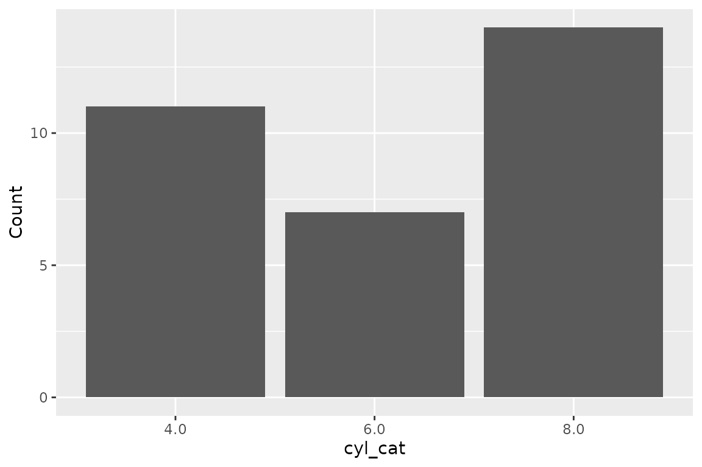
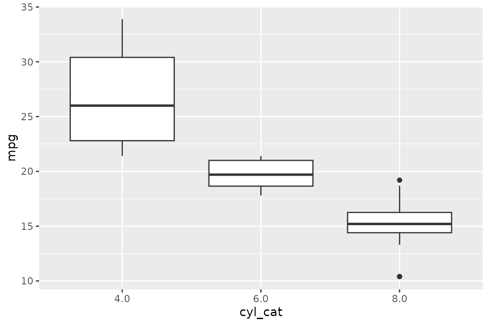

What is SGL?
SGL (Structured Graphics Language) is a declarative language for
generating statistical graphics from relational data. It is designed to
feel like SQL — if you can write a SELECT statement, you
can write a SGL statement.
rsgl implements SGL as an R package. You pass a SGL statement and a
DuckDB connection to dbGetPlot(), and it returns a ggplot2
plot object.
Setup
Install rsgl from GitHub:
# install.packages("remotes")
remotes::install_github("sgl-projects/rsgl")Load the package and create a DuckDB connection with some data:
library(rsgl)
library(duckdb)
#> Loading required package: DBI
con <- dbConnect(duckdb())
dbWriteTable(con, "cars", mtcars)The cars table now contains the mtcars
dataset with columns like hp (horsepower), mpg
(miles per gallon), cyl (cylinders), and wt
(weight).
Your first plot
A SGL statement has three required parts:
-
visualize— maps columns to visual properties (aesthetics) -
from— specifies the data source -
using— chooses the geometric object (geom)
dbGetPlot(con, "
visualize
hp as x,
mpg as y
from cars
using points
")
This maps hp to the x-axis and mpg to the
y-axis, pulls data from the cars table, and draws a point
for each row.
Adding color
Map a third column to the color aesthetic to distinguish
groups:
dbGetPlot(con, "
visualize
hp as x,
mpg as y,
cyl as color
from cars
using points
")
Changing geoms
Swap points for a different geom to change the
representation. Use bars for a bar chart — here combined
with count(*) to count rows per group:
dbGetPlot(con, "
visualize
cyl_cat as x,
count(*) as y
from (
select cast(cyl as varchar) as cyl_cat
from cars
)
group by
cyl_cat
using bars
")
Use line for a line chart, and boxes for
box plots:
dbGetPlot(con, "
visualize
cyl_cat as x,
mpg as y
from (
select mpg, cast(cyl as varchar) as cyl_cat
from cars
)
using boxes
")
Layering
Combine multiple geoms with the layer keyword. This
overlays a regression line on a scatterplot:
dbGetPlot(con, "
visualize
hp as x,
mpg as y
from cars
using (
points
layer
regression line
)
")
#> `geom_smooth()` using formula = 'y ~ x'
Next steps
The SGL Language Guide covers
the full syntax including transformations (bin,
count), grouping, collection, scaling, faceting, coordinate
systems, and titles.